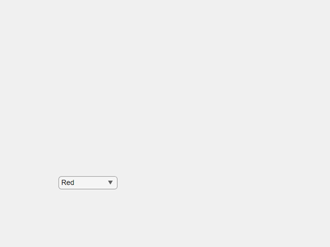

uidropdown
Create drop-down component
Description
dd = uidropdownDropDown object. MATLAB® calls the uifigure function to create the
figure.
dd = uidropdown(parent)Figure object or one of its child
containers.
dd = uidropdown(___,Name,Value)DropDown properties using one or more name-value
arguments. For example, uidropdown("Editable","on") creates a
drop-down component that enables typing. Use this option with any of the input
argument combinations in the previous syntaxes.
Examples
Create a drop-down component with the default items.
fig = uifigure; dd = uidropdown(fig);

Click anywhere in the component to open the drop-down list.

Create an editable drop-down component in a UI figure. Users can either choose from the existing items by clicking the drop-down arrow or enter their own value as text by clicking the component.
fig = uifigure; dd = uidropdown(fig,"Editable","on");

Create a drop-down component in a UI figure and specify the items.
fig = uifigure; dd = uidropdown(fig,"Items",["Red","Yellow","Blue","Green"]);

Determine the value associated with the selected item. When the
ItemsData property is empty (the default), the
drop-down component Value property stores the name of
the selected item as it appears in the Items
property.
value = dd.Value
value =
'Red'Associate a hexadecimal color code with each drop-down component item by
specifying the ItemsData property.
dd.ItemsData = ["#F00" "#FF0" "#00F" "#0F0"];
When ItemsData is nonempty, the drop-down component
Value property stores the data associated with the
selected item.
value = dd.Value
value =
"#F00"
Since R2023a
Create a drop-down UI component with three items.
fig = uifigure; dd = uidropdown(fig,"Items",["Good","Fair","Poor"]);
Create three background color styles.
s1 = uistyle("BackgroundColor","#77AC30"); s2 = uistyle("BackgroundColor","#EDB120"); s3 = uistyle("BackgroundColor","#F77A8F");
Add the styles to the drop-down component items to change their background colors.
addStyle(dd,s1,"item",1); addStyle(dd,s2,"item",2); addStyle(dd,s3,"item",3);
The item background colors update, and the appearance of the component reflects the style of the selected item. The style does not change the color that displays when a user points to an item.

Create an app that changes the color of a plotted line when an app user makes a selection from a drop-down list.
In a file named plotOptions.m, write a function that implements the app:
Create a UI figure and a grid layout manager to lay out the app.
Create UI axes and a drop-down component in the grid layout manager.
Write a callback function named
updatePlotthat changes the plot color based on the selected drop-down component item, and assign the function to theValueChangedFcncallback property. For more information about callbacks, see Create Callbacks for Apps Created Programmatically.
function plotOptions fig = uifigure; g = uigridlayout(fig); g.RowHeight = {'1x','fit','1x'}; g.ColumnWidth = {'1x','fit'}; ax = uiaxes(g); ax.Layout.Row = [1 3]; ax.Layout.Column = 1; x = linspace(-2*pi,2*pi); y = sin(x); p = plot(ax,x,y,"Color","#F00"); dd = uidropdown(g, ... "Items",["Red","Yellow","Blue","Green"], ... "ItemsData",["#F00" "#FF0" "#00F" "#0F0"], ... "ValueChangedFcn",@(src,event) updatePlot(src,p)); dd.Layout.Row = 2; dd.Layout.Column = 2; end function updatePlot(src,p) val = src.Value; p.Color = val; end
Run the plotOptions function. Select an item from the drop-down list to change the plot color.
plotOptions

Create an app that allows a user to choose an image to display. Because the app contains an editable drop-down component, write your code to handle users selecting an existing item and users entering their own value.
In a file named imageApp.m, write a function that implements the app:
Create a UI figure and a grid layout manager to lay out the app.
Create an editable drop-down component and an image component in the grid layout manager.
Write a callback function named
updateImagethat changes the image based on the selected drop-down component item, and assign the function to theValueChangedFcncallback property. Query the callback event data to check if the new value was selected from the existing items or was entered by the user, and validate any user-entered value. For more information about callbacks, see Create Callbacks for Apps Created Programmatically.
function imageApp fig = uifigure; g = uigridlayout(fig,[2 3]); g.RowHeight = {22,'1x'}; g.ColumnWidth = {'1x','fit','1x'}; dd = uidropdown(g, ... "Editable","on", ... "Items",["peppers.png","street1.jpg"]); dd.Layout.Row = 1; dd.Layout.Column = 2; im = uiimage(g,"ImageSource","peppers.png"); im.Layout.Row = 2; im.Layout.Column = [1 3]; dd.ValueChangedFcn = @(src,event)updateImage(src,event,im,fig); end function updateImage(src,event,im,fig) val = src.Value; if event.Edited && ~exist(val,"file") im.ImageSource = ""; uialert(fig,"Enter a file on the MATLAB path","Invalid Image") else im.ImageSource = val; end end
Run the imageApp function and update the image by selecting an existing item or by entering your own image path.